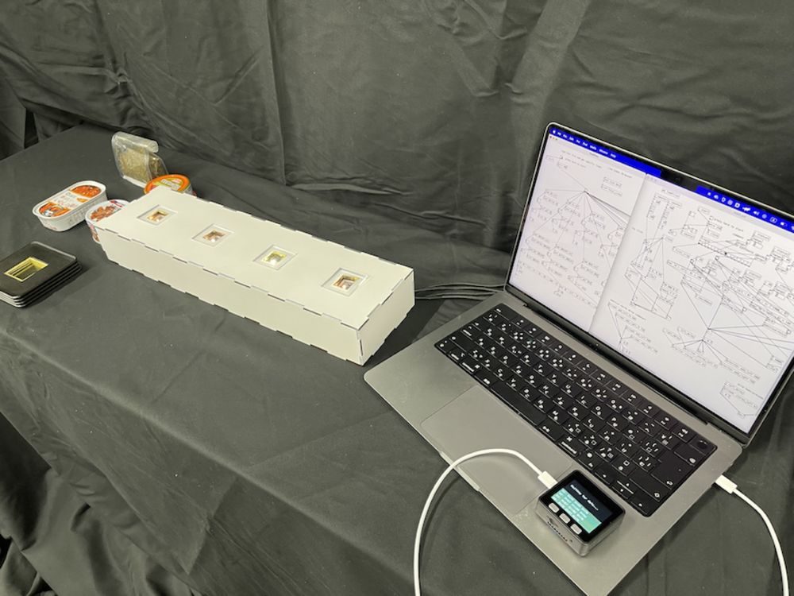
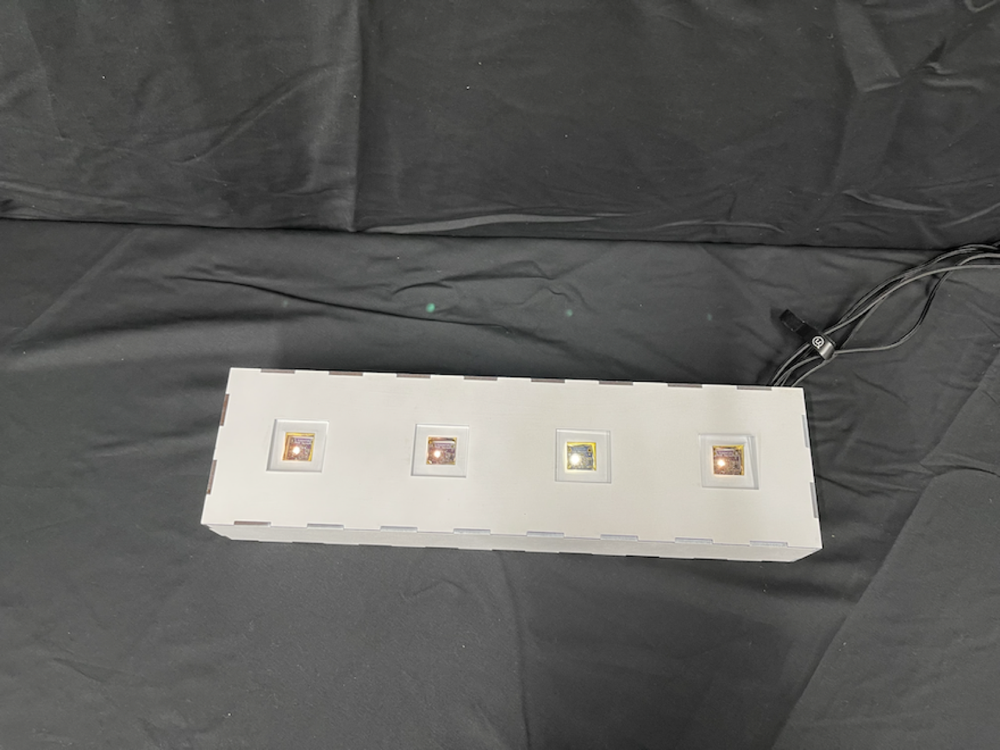
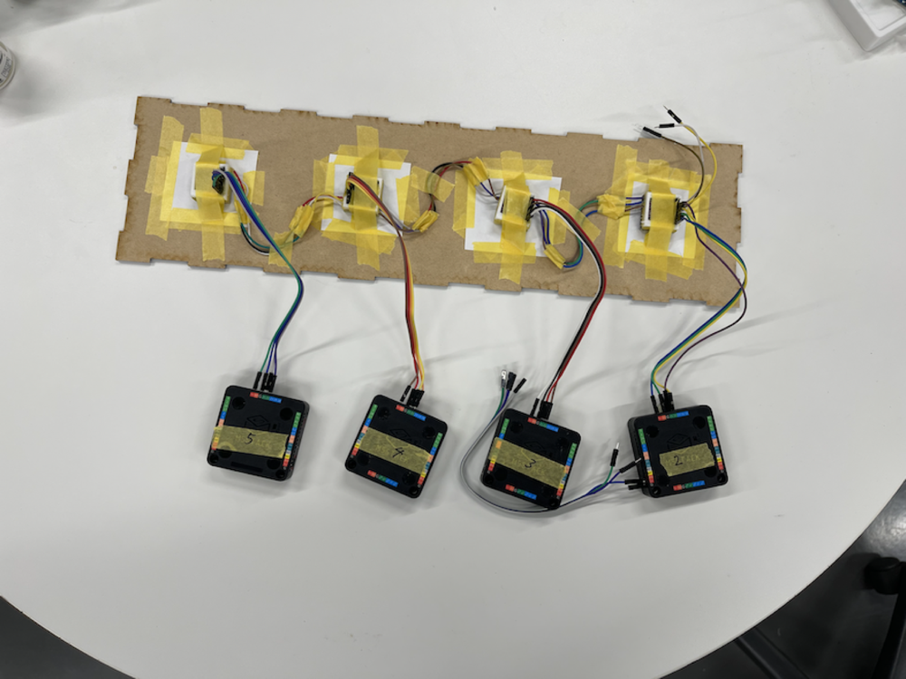
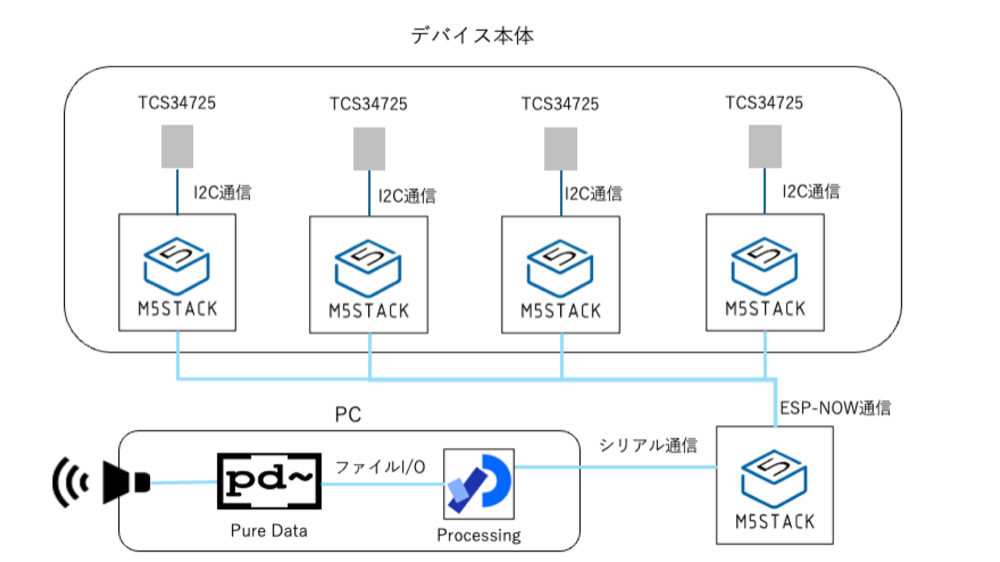

Mealody Plate

YouTubeで動画を開くTechnology
- M5stack Basic
- カラーセンサー
- ESP-BOW
- Pure Data
本作品は、「食事と音楽を結びつけたら面白いのではないか」という発想から生まれた、食事を通じて音楽を生成するインタラクティブデバイスです.鑑賞者は料理を楽しみながら、同時にその料理から生まれる音楽を体験し、最終的に「音を食べる」という新しい感覚を味わうことができると考えています.
本作品のデバイスには4つのカラーセンサーが搭載されており、それぞれが料理の皿に反応します.各センサーはRGBの色情報を取得し、4台のM5Stackデバイスがそれを受信専用のM5Stackデバイスに送信します.この情報をProcessingを介してPureDataに伝えられ、音の生成に活用されます.
各カラーセンサーには異なる音色が割り当てられており、例えば金属的な音やハイハット的な音が再生されます.さらに、4つのセンサーから取得した色情報を周波数に変換し、和音として出力する仕組みも備えています.これにより、複数の皿を配置することで、より完成度の高い音楽が奏でられる設計になっています.（音楽はpatchstageに公開されているargarak氏の作品を参考にパッチを組みました）
鑑賞者が料理を食べると、その皿に対応する音が消え、徐々に音楽が減少していきます.4つの皿をすべて配置した状態が「完成された音楽」として提示され、食べる行為を通じて音楽が消費されていくという体験を提供します.
料理ごとに異なる色情報を取得するため、生成される音楽は毎回異なります.このため、鑑賞者は「その場限りの音楽」を楽しむことができ、さらに料理を食べることで音楽を消費するという新しい音楽体験が生まれると考えられます.


